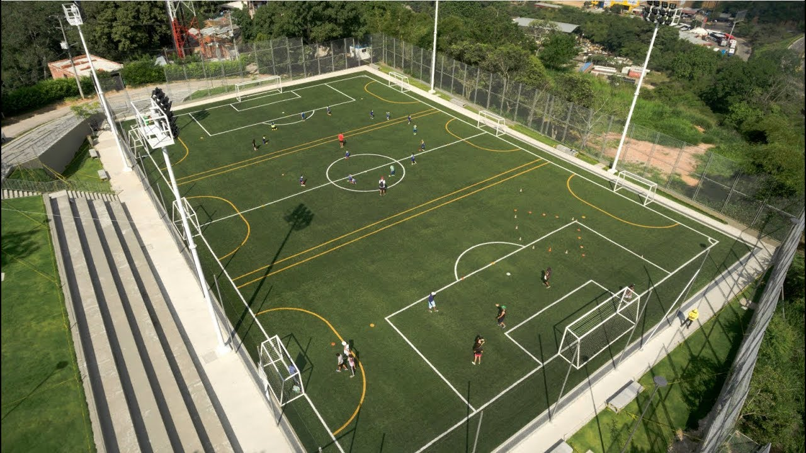
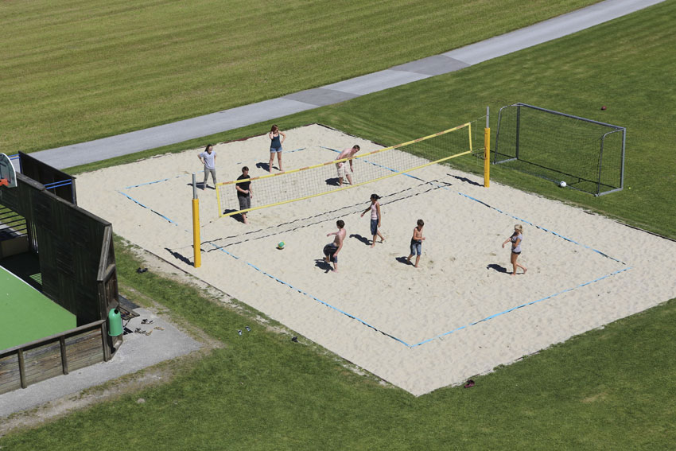
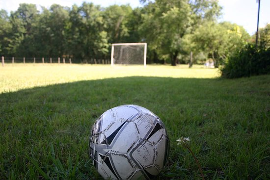
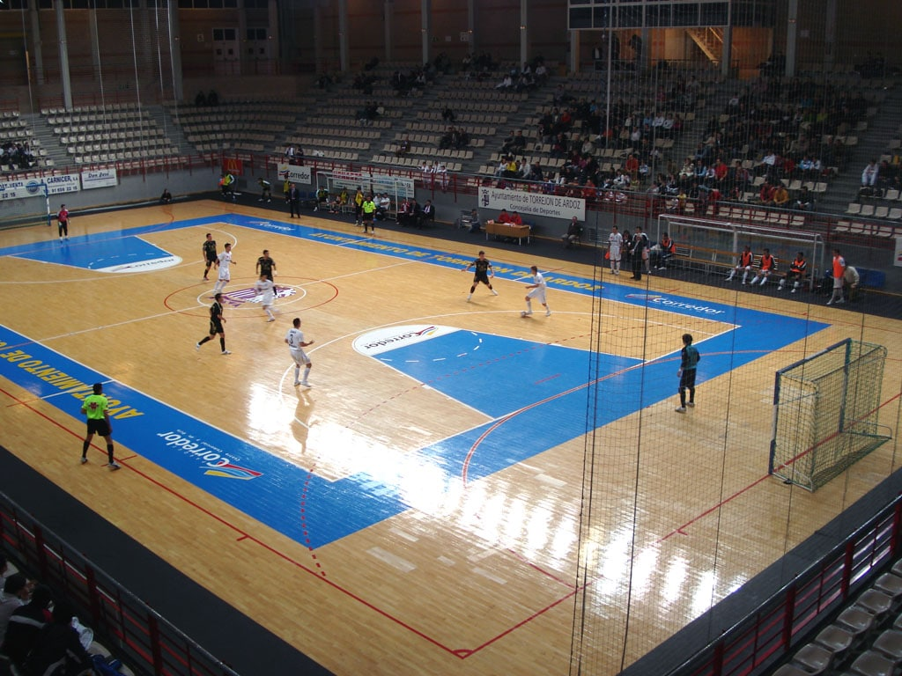

Tipos de canchas
| NOMBRE | DESCRIPCIÓN | IMAGEN |
|---|
| Sintética |
Sistemas que siguen las normas dadas por la federación aprobados por la F.I.F.A lo cual es con el fin de propiciar las características del terreno de juego óptimas relativas al bote y rodadura del balón, las canchas de pasto artificial debe tener unas medidas oficiales en cuanto al:
peso de fibra, peso total, alturas y composiciones de las fibras; que de no ser las adecuadas. |
 |
| NOMBRE | DESCRIPCIÓN | IMAGEN |
|---|
| Canchas de arena |
Este terreno de fútbol esta constituido por una superficie lisa de arena. con una profundidad de 40 cm, como mínimo, el terreno es rectangular y su tamaño es dependiendo de Las zonas del terreno donde este construida. |
 |
| NOMBRE | DESCRIPCIÓN | IMAGEN |
|---|
| Cancha de cesped natural |
Los pavimentos de césped natural que se utilizan para deportes están realizados con una pradera deportiva que se compone principalmente de los siguientes elementos: Capa drenante, sustrato y capa vegetal. |
 |
| NOMBRE | DESCRIPCIÓN | IMAGEN |
|---|
| Canchas de futbol sala |
carecen de importancia las medidas y características del campo: basta cualquier espacio para desatar la pasión por el deporte de los balones y las porterías. No obstante, es importante saber que cada variante puede influir en el éxito o la derrota de un equipo. |
 |